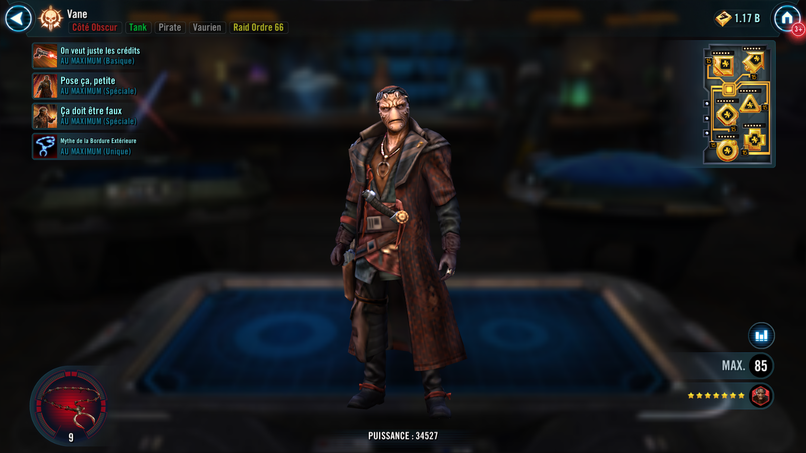

Vane
A bold and fierce Pirate Tank who thrives in chaos and never backs down from a fight
A bold and fierce Pirate Tank who thrives in chaos and never backs down from a fight

Deal Physical damage to target enemy and inflict Offense Down for 1 turn. For each stack of Profit on him, Vane gains 20% Defense (stacking) for 1 turn. On his turn, if he has at least 5 stacks of Profit, Daze the target enemy for 1 turn.
If Vane's Health percentage is equal to or greater than the target enemy, Stun them for 1 turn and gain a stack of Profit (max 5). If Vane's Health percentage is lower, recover 25% Health, and gain Evasion Up for 1 turn. Deal Physical damage to target enemy. If Vane has 10+ stacks of Profit and the target enemy has Taunt, Vane consumes 10 stacks, Steals Taunt from target enemy with refreshed duration, and gains 5 stacks of Bulwark for 2 turns.
Vane dispels all debuffs on all other Pirate allies and is inflicted with the same debuffs (excluding Purge). If Defense Down, Evasion Down, or Tenacity Down were dispelled, all other Pirate allies gain the opposite buff for 1 turn. Vane gains 10% Max Health per debuff on him for the rest of the encounter (stacking, max 100% Health).
If the allied Leader is Pirate King Hondo Ohnaka, the max Health stacking is doubled to 200%. If no debuffs were dispelled, Vane Taunts and gains Protection Up (50%, stacking) for 2 turns.
Whenever another Pirate ally gains a stack of Profit, Vane Taunts for 1 turn. At the start of battle, if all allies are Pirates, Vane gains 50% Max Health and Max Protection. Whenever another Pirate ally takes damage while he is Taunting, Vane equalizes his Health and Protection with the weakest ally at the end of the turn and gains 2 stacks of Bulwark for 1 turn, and if the allied Leader is Pirate King Hondo Ohnaka, he gains 3 stacks of Bulwark instead. Whenever another Pirate ally scores a critical hit while Vane is Taunting, he recovers 10% Health and Protection. If Vane has less than 50% Health, he recovers 25% Health and Protection instead. Vane has +20% Critical Avoidance per debuff on him. Whenever Vane has a debuff dispelled on him, he gains Protection Up (10%, stacking) for the rest of the encounter.
At the start of the encounter, if the allied Leader is Pirate King Hondo Ohnaka, Vane takes reduced damage from Percent Health damage effects, gains Protection Up (100%) and Taunts for 2 turns, which can't be dispelled, and Pirate allies gain Offense Up for 3 turns. The first time Pirate King Hondo Ohnaka's health falls below 25%, dispel all debuffs on him, and equalize Health and Protection with him, then Vane recovers 50% Health and Protection. If Pirate King Hondo Ohnaka or Maz Kanata is the ally in the Leader slot, the cap for Profit is removed for Vane.
Omicron Boost : While in Territory Battles: At the start of battle, Pirate allies gain 100% Max Health and Max Protection and 2 stacks of Profit. If the allied Leader is Pirate King Hondo Ohnaka, Vane gains double that amount. Whenever Vane's Health falls below 25% for the first time, he recovers 50% Health, gains 100% Protection, and Taunts for 3 turns. If he is already Taunting, he also dispels all the debuffs on himself. At the start of his turn, if Vane has at least 5 stacks of Profit, inflict Potency Down and Tenacity Down on all enemies for 2 turns, which can't be resisted.